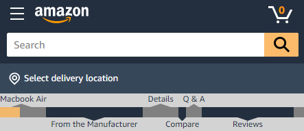

For this experiment you will be asked to find three items of information on two different Amazon product webpages. Please note that for the purposes of this study links and buttons on the Amazon pages have been disabled except for the "Continue" button at the bottom of each page. Each webpage has a short survey after.
Pay close attention to the differences you notice in the navigation features of the web pages, and use them to your advantage if you can.
One version of the site features a standard Amazon product page with standard navigation features.
Another version of the site features an Amazon product page with additional navigation features. The site has an extra area of the navigation bar at the top of the screen that moves with you when you scroll. The grey and blue bar in the center acts as a map of each section of the page. The sections are labeled in the map to make them easier to find on the page. The map also features a moving yellow indicator that shows where you are on the page. The width of the yellow indicator matches the visible area of the page. Clicking or tapping each section in the map will automatically scroll you to that section of the page.
After you click "Continue" below a page will appear giving instructions on what to find on the page. You may be asked to find such things as an item's weight or storage capacity. When you understand what to find press "Begin" and the Amazon page will appear. There will be a form at the end of the page where you can enter each item as you find them. Find each item and use the information from each to fill out the form at the end. When you are finished, press "Continue."
When you understand these instructions press "Begin Experiment" to begin the experiment.